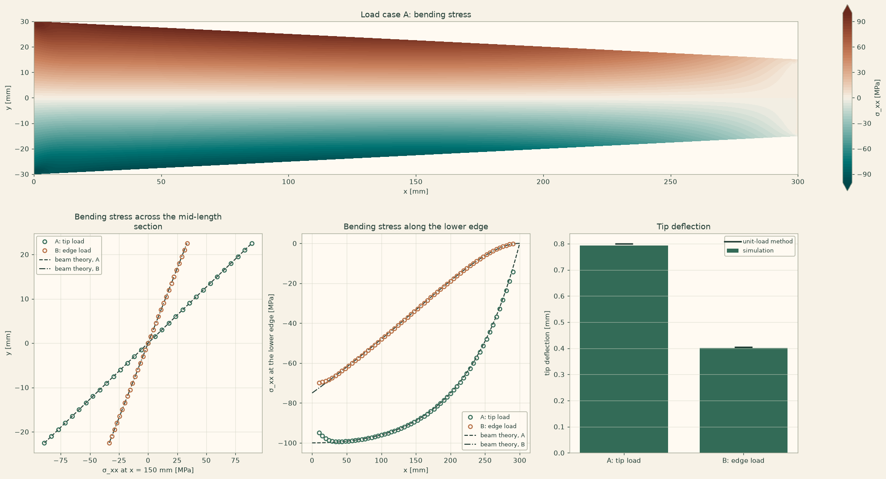
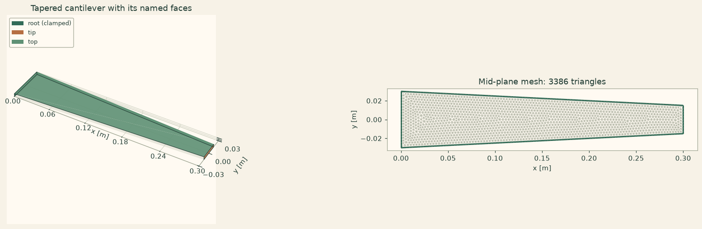

Docs › Examples › Tapered cantilever with two load cases
Linear elasticity · 2D
Tapered cantilever with two load cases
A thin steel cantilever whose depth halves from root to tip, loaded once by a tip force and once by a distributed load on its upper edge.

What it computes
OneSimulation cuts the plate from the STEP file to its mid-plane and solves both load cases in plane stress with quadratic triangles on three meshes; the bending stress comes from the displacement gradient across sections and along the edges. The script that builds the STEP file comes with the notebook.
What it checks
Tip deflections 0.7936 mm and 0.4018 mm agree with the unit-load method for a member of variable depth within 0.72 % and 0.59 %; the outer-fibre stress at mid-length matches beam theory within 0.3 % in both load cases.
Geometry
The notebook starts at the import of the CAD file tapered_cantilever_load_cases.step: STEP (AP242), readable by any CAD program, with the names of the faces that the boundary conditions use. Put it next to the notebook.

The geometry script
The script tapered_cantilever_load_cases_geometry.py builds the geometry with the CAD objects of OneSimulation and writes the file. Change a dimension there, run it, and run the notebook again.
"""Geometry of the OneSimulation example "Tapered cantilever with two load cases".
Builds the tapered cantilever, 300 mm long, 60 mm deep at the clamped root and 30 mm deep at the
free tip, with both long edges inclined symmetrically, as a 5 mm thick plate with the CAD objects
of OneSimulation, and writes tapered_cantilever_load_cases.step. The faces are named root, tip,
top and bottom.
"""
from onesim.cad.d2 import Profile
from onesim.cad.d3 import Prism
length, root, tip, thickness = 0.300, 0.060, 0.030, 0.005
outline = Profile.polygon(
[(0.0, -root / 2), (length, -tip / 2), (length, tip / 2), (0.0, root / 2)],
names=("bottom", "tip", "top", "root"),
)
beam = Prism(profile=outline, height=thickness)
beam.save("tapered_cantilever_load_cases.step")The notebook
The complete notebook, cell by cell. Run it to produce the figures and the comparison printout.
A cantilever of length \(L=300\) mm is cut from a 5 mm steel plate. Its depth falls linearly from \(h_0=60\) mm at the clamped root to \(h_1=30\) mm at the free tip, both long edges inclined by the same angle, so the centre line stays straight. Two load cases are compared:
| load case | load | |---|---| | A: tip load | shear force \(F=1\) kN, spread evenly over the tip face | | B: edge load | distributed load \(q=5\) N/mm downwards along the upper edge |
In both cases the root is clamped and every other edge is traction free.
The cantilever comes from the CAD file tapered_cantilever_load_cases.step with the faces root, tip, top and bottom; the script tapered_cantilever_load_cases_geometry.py builds it with the CAD objects of OneSimulation. The plate is thin and loaded in its plane, so the model is plane stress on the mid-plane.
Reference. Beam theory for a member of variable depth \(h(x)\), thickness \(t\) and bending moment \(M(x)\) (S. Timoshenko, Strength of Materials, Part I, 3rd ed., Van Nostrand (1955), Sec. 52): the bending stress \(\sigma_{xx}=M\,y/I(x)\) with \(I=t\,h^3/12\), and the tip deflection from the unit-load method with bending and shear,
For case A \(M=F(L-x)\), \(V=F\); for case B \(M=q(L-x)^2/2\), \(V=q(L-x)\).
import numpy as np
from onesim.cad.exchange import load
from onesim.meshing import TriangularMesher
from onesim.physics.solid_mechanics import SmallStrainSolid
from onesim.results.comparisons import convergence
from onesim.visualization import plots, theme
theme.set()Geometry and mesh
load returns the plate with its named faces and section the mid-plane region with the same side names. Three meshes of quadratic triangles with 6, 3 and 1.5 mm cells are used.
beam = load("tapered_cantilever_load_cases.step")
faces = beam.boundaries
length, _, thickness = beam.size
region = beam.section((0, 0, 1), origin=(0, 0, thickness / 2))
sides = region.boundaries
sizes = [0.006, 0.003, 0.0015]
meshes = [TriangularMesher(target_size=size).generate(region) for size in sizes]
fig = plots.figure(1, 2, size=(15, 4.5))
plots.geometry(
beam,
selection={"root (clamped)": faces.root, "tip": faces.tip, "top": faces.top},
labels=False,
camera=plots.Camera(elevation=40, azimuth=-60),
title="Tapered cantilever with its named faces",
ax=fig[0],
)
plots.mesh(
meshes[1],
groups=("all",),
legend=False,
title=f"Mid-plane mesh: {meshes[1].cell_count} triangles",
ax=fig[1],
)
plots.show()Model
Plane stress with quadratic triangles. The tip force becomes a uniform shear traction on the tip face, the edge load a vertical traction \(q/t\) on the upper edge.
youngs_modulus, poisson_ratio, force, line_load, root, tip = (
210e9,
0.3,
1000.0,
5000.0,
0.060,
0.030,
)
steel = SmallStrainSolid(
youngs_modulus=youngs_modulus,
poisson_ratio=poisson_ratio,
kinematics="plane_stress",
thickness=thickness,
)
cases = {
"A: tip load": ((sides.tip, (0.0, -force / (tip * thickness))),),
"B: edge load": ((sides.top, (0.0, -line_load / thickness)),),
}
runs = {
case: [
steel.solve(
mesh=mesh,
times=(0.0,),
order=2,
displacements=((sides.root, "x", 0.0), (sides.root, "y", 0.0)),
tractions=tractions,
)
for mesh in meshes
]
for case, tractions in cases.items()
}Results
The tip deflection on the three meshes against the unit-load method, and the bending stress, computed with Hooke's law from the gradient of the displacement, across the section at mid-length and along the lower edge.
x = np.linspace(0.0, length, 2001)
depth = root + (tip - root) * x / length
moments = {
"A: tip load": (force * (length - x), force + 0 * x),
"B: edge load": (line_load * (length - x) ** 2 / 2, line_load * (length - x)),
}
unit_load = lambda moment, shear: np.trapezoid(
moment * (length - x) / (youngs_modulus * thickness * depth**3 / 12)
+ shear / (5 / 6 * youngs_modulus / (2 * (1 + poisson_ratio)) * thickness * depth),
x,
)
bending = (
lambda result, points: youngs_modulus
/ (1 - poisson_ratio**2)
* (lambda g: g[:, 0, 0] + poisson_ratio * g[:, 1, 1])(
result.space.gradient(result.displacement[0], points)
)
)
height = np.linspace(-0.0225, 0.0225, 31)
across = np.column_stack((np.full_like(height, length / 2), height))
along = np.linspace(0.01, length - 0.01, 60)
edge = np.column_stack((along, -(root + (tip - root) * along / length) / 2 + 1e-5))
for case, results in runs.items():
deflections = [
-result.evaluate_displacement(np.array([[length, 0.0]]))[0, 1]
for result in results
]
reference = unit_load(*moments[case])
study = convergence(deflections, sizes)
inertia = thickness * 0.045**3 / 12
print(
f"{case}: tip deflection {1e3 * deflections[-1]:.4f} mm, unit-load method {1e3 * reference:.4f} mm, "
f"deviation {100 * (deflections[-1] / reference - 1):+.2f} % (mesh change {100 * study.change:.3f} %)"
)
print(
f" outer-fibre stress at mid-length: simulation {bending(results[-1], across[-1:])[0] / 1e6:.2f} MPa, "
f"beam theory {np.interp(length / 2, x, moments[case][0]) * 0.0225 / inertia / 1e6:.2f} MPa"
)Figure
The bending stress \(\sigma_{xx}\) for the tip load, the stress across the section at mid-length and along the lower edge for both load cases, each against beam theory.
mesh, result = meshes[-1], runs["A: tip load"][-1]
fig = plots.figure(
layout=[["map", "map", "map"], ["across", "edge", "tip"]], size=(18, 10)
)
plots.heatmap(
1e3 * mesh.coordinates[:, 0],
1e3 * mesh.coordinates[:, 1],
bending(result, mesh.coordinates) / 1e6,
triangles=np.asarray(mesh.cells),
colormap="diverging",
centre=0.0,
limits=(-100, 100),
label="σ_xx [MPa]",
xlabel="x [mm]",
ylabel="y [mm]",
title="Load case A: bending stress",
ax=fig["map"],
)
plots.line(
points={
case: (bending(results[-1], across) / 1e6, 1e3 * height)
for case, results in runs.items()
},
reference={
f"beam theory, {case[:1]}": (
np.interp(length / 2, x, moments[case][0])
* height
/ (thickness * 0.045**3 / 12)
/ 1e6,
1e3 * height,
)
for case in runs
},
xlabel="σ_xx at x = 150 mm [MPa]",
ylabel="y [mm]",
title="Bending stress across the mid-length section",
legend="upper left",
ax=fig["across"],
)
plots.line(
points={
case: (1e3 * along, bending(results[-1], edge) / 1e6)
for case, results in runs.items()
},
reference={
f"beam theory, {case[:1]}": (
1e3 * x,
-6 * moments[case][0] / (thickness * depth**2) / 1e6,
)
for case in runs
},
xlabel="x [mm]",
ylabel="σ_xx at the lower edge [MPa]",
title="Bending stress along the lower edge",
legend="lower right",
ax=fig["edge"],
)
plots.bars(
list(runs),
{
"simulation": [
-results[-1].evaluate_displacement(np.array([[length, 0.0]]))[0, 1] * 1e3
for results in runs.values()
]
},
reference={"unit-load method": [1e3 * unit_load(*moments[case]) for case in runs]},
ylabel="tip deflection [mm]",
title="Tip deflection",
ax=fig["tip"],
)
plots.show()Going further
Change the depths in tapered_cantilever_load_cases_geometry.py and write the STEP file again: for a steeper taper the inclined edges carry part of the shear and beam theory starts to deviate. Combine both load cases by adding their tractions, or replace the clamp by a pin and a roller to compare support conditions.